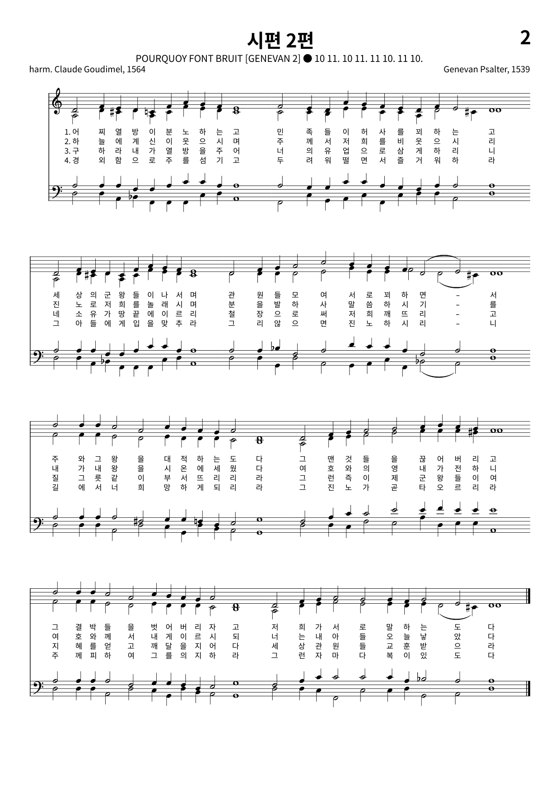

시편 2편
POURQUOY FONT BRUIT [GENEVAN 2] · 10 11. 10 11. 11 10. 11 10.
곡조: Genevan Psalter, 1539 · 화성: Claude Goudimel, 1564 · 가사: 개역한글판 시편 2편 편역(AI 초벌 편역판 · 신학 감수 전) · 4절
악보 PDF MusicXML(출력용) MusicXML(반주용, 전주·반복 포함) 개역한글 시편 2편 읽기

가사
1절
어찌 열방이 분노하는고
민족들이 허사를 꾀하는고
세상의 군왕들이 나서며
관원들 모여 서로 꾀하면서
주와 그 왕을 대적하는도다
그 맨 것들을 끊어 버리고
그 결박들을 벗어 버리자고
저희가 서로 말하는도다
어찌 열방이 분노하는고
민족들이 허사를 꾀하는고
세상의 군왕들이 나서며
관원들 모여 서로 꾀하면서
주와 그 왕을 대적하는도다
그 맨 것들을 끊어 버리고
그 결박들을 벗어 버리자고
저희가 서로 말하는도다
2절
하늘에 계신 이 웃으시며
주께서 저희를 비웃으시리
진노로 저희를 놀래시며
분을 발하사 말씀하시기를
내가 내 왕을 시온에 세웠다
여호와의 영 내가 전하니
여호와께서 내게 이르시되
너는 내 아들 오늘 낳았다
하늘에 계신 이 웃으시며
주께서 저희를 비웃으시리
진노로 저희를 놀래시며
분을 발하사 말씀하시기를
내가 내 왕을 시온에 세웠다
여호와의 영 내가 전하니
여호와께서 내게 이르시되
너는 내 아들 오늘 낳았다
3절
구하라 내가 열방을 주어
너의 유업으로 삼게 하리니
네 소유가 땅끝에 이르리
철장으로써 저희 깨뜨리고
질그릇 같이 부서뜨리리라
그런즉 이제 군왕들이여
지혜를 얻고 깨달을지어다
세상 관원들 교훈 받으라
구하라 내가 열방을 주어
너의 유업으로 삼게 하리니
네 소유가 땅끝에 이르리
철장으로써 저희 깨뜨리고
질그릇 같이 부서뜨리리라
그런즉 이제 군왕들이여
지혜를 얻고 깨달을지어다
세상 관원들 교훈 받으라
4절
경외함으로 주를 섬기고
두려워 떨면서 즐거워하라
그 아들에게 입을 맞추라
그리 않으면 진노하시리니
길에서 너희 망하게 되리라
그 진노가 곧 타오르리라
주께 피하여 그를 의지하라
그런 자마다 복이 있도다
경외함으로 주를 섬기고
두려워 떨면서 즐거워하라
그 아들에게 입을 맞추라
그리 않으면 진노하시리니
길에서 너희 망하게 되리라
그 진노가 곧 타오르리라
주께 피하여 그를 의지하라
그런 자마다 복이 있도다